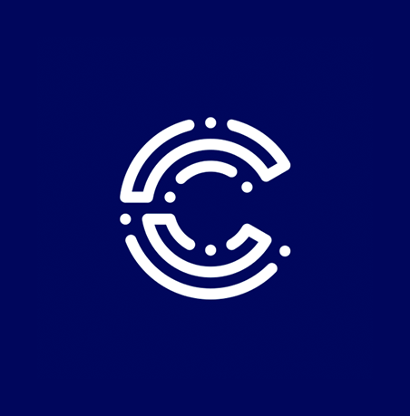
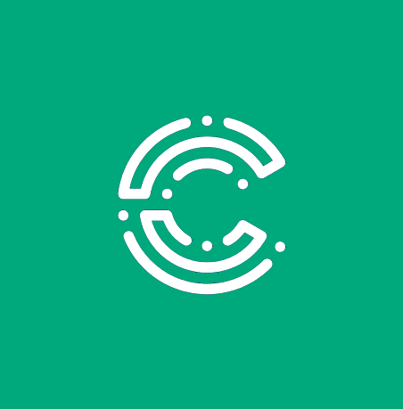
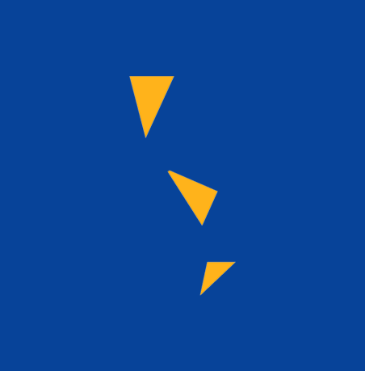
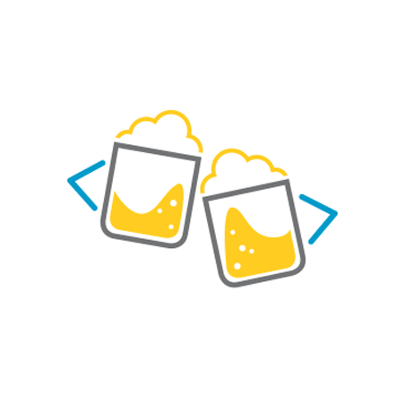
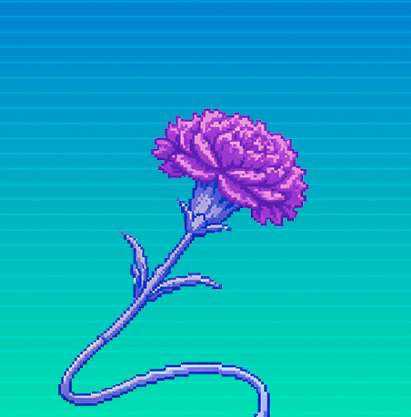

Com foco especial em organizações que trabalham na interseção entre tecnologias e direitos.
Iniciativas
01
Criação de conteúdo, design, agendamento e gestão estratégica — do planejamento editorial ao resultado.
Gestão estratégica e criação de conteúdo para a principal organização de dados abertos do país. Planejamento editorial, execução e monitoramento realizados em parceria, com pautas dos programas da organização.
Comunicação do programa de alfabetização em dados, com conteúdo sobre cursos, tutoriais, eventos e tendências em dados abertos e jornalismo de dados.
Comunicação do grupo de editoras da Wikipédia em Lisboa. Conteúdo sobre edição colaborativa, representatividade no conhecimento livre e atividades do grupo na comunidade portuguesa.
03
Comunicação, peças gráficas, divulgação em redes sociais e apoio à produção de eventos de dados abertos, jornalismo e tecnologia.

Conferência nacional · São Paulo, SP
A maior conferência de jornalismo de dados da América Latina. Comunicação do evento, adaptação de identidade visual, apoio à captação, ao planejamento, criação de peças gráficas, divulgação nas redes da Escola de Dados e OKBR, interface com fornecedores de brindes e equipe de transmissão e registro, e apoio à produção durante o evento.

Conferência regional · Belém, PA
Capítulo regional do Coda.Br sediado em Belém, com foco em dados e jornalismo na Amazônia. Criação da primeira identidade visual, apoio à captação e ao planejamento, peças para divulgação, gestão das redes durante o evento, interface com fornecedores de serviços locais, além de apoio à produção.

Conferência internacional · Brasília, DF
Conferência sobre governo aberto, transparência e participação cívica na América Latina. Co-liderança da comunicação do evento, criação de site do evento, de peças gráficas, criação e manutenção de mailing e divulgação nas redes sociais.

Encontro informal · múltiplas cidades
Encontros informais para fortalecer a comunidade de dados em todas as regiões do Brasil. Proposta de guia de como fazer, apoio a organizadores locais e divulgação nas redes.

Festival · Setúbal, Portugal
Festival de tecnologia e inovação popular sediado em Setúbal. Apoio à comunicação da 2ª edição via Wiki Editoras Lx — criação de identidade visual, de peças gráficas e divulgação nas redes sociais.
04
Uma prévia com as experiências mais recentes. Para o currículo completo, acesse a página reservada.
Experiência recente
Coordenadora de comunicação
Open Knowledge Brasil
nov. 2023 — presente
Lidera estratégias de comunicação institucional e advocacy digital para avançar as agendas de transparência, dados abertos e direitos digitais no Brasil e na América Latina.
Associada de comunicação
Wiki Editoras Lx
mar. 2025 — presente
Lidera estratégia de conteúdo para o grupo de editoras da Wikipédia em Lisboa, gerenciando redes sociais e newsletter.
Gerente de comunidade
Escola de Dados · Open Knowledge Brasil
jul. 2020 – out. 2023
Gerenciou comunidades online e presenciais de jornalistas e especialistas em dados, fomentando engajamento em torno de jornalismo de dados e letramento digital.
Formação
Bacharelado em Publicidade e Propaganda
Universidade Federal do Rio de Janeiro
Inteligência Artificial para organizações
Anacronia
IA para Comunicação de Impacto
ITS Rio
Competências
Idiomas
Currículo completo
O currículo detalhado — com formação, publicações, idiomas e referências — está numa página separada, com acesso por link direto.
05
Sites, apresentações, campanhas e outros trabalhos de comunicação.
Desenvolvimento e manutenção do site profissional da jornalista a partir da identidade visual já estabelecida, com implementação em WordPress e adaptação da arquitetura do conteúdo para publicação editorial. O projeto incluiu oficina de capacitação para integrantes da equipe, voltada à autonomia na gestão do site, além de suporte técnico e ajustes periódicos para atualização.

Criação da apresentação institucional de captação de recursos e parcerias para o IX Congresso Direitos Fundamentais e Processo Penal na Era Digital, realizado pelo InternetLab. O trabalho envolveu organização estratégica das informações e desenvolvimento visual alinhado à identidade do evento, com foco em clareza, impacto institucional e comunicação com potenciais apoiadores.
Adaptação e diagramação da edição em português da publicação “Economias criminosas na maior floresta tropical do mundo”, produzida no âmbito do projeto Amazon Underworld. O trabalho consistiu na aplicação e adequação do conteúdo traduzido ao projeto gráfico já estabelecido na versão original em inglês do relatório, garantindo a consistência visual do produto.
Disponível para oportunidades em comunicação estratégica, gestão de redes e produção de eventos no Brasil e em Portugal.
Disponibilidade
Status atual
Aberta a novas oportunidades — tempo integral, tempo parcial ou projetos de longa duração.
Coordenadora de comunicação
Bacharelado em Publicidade e Propaganda
Universidade Federal do Rio de Janeiro (UFRJ)
Inteligência Artificial para organizações
Anacronia
IA para Comunicação de Impacto
ITS Rio
Idiomas
Esta página é de acesso restrito — compartilhe o link apenas com quem quiser.